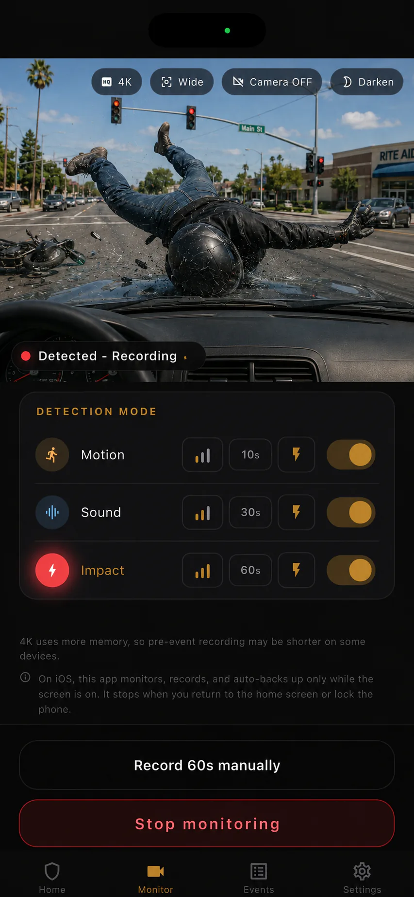

Three detection modes
Motion, sound, and impact are independently configurable.
Parked-car monitoring
BlackShisa - Parking Dashcam App brings motion, sound, and impact detection into one parked-car monitoring app, with local evidence first and optional Google backup when you want it.
Published by ICHITAP · Updated

Motion, sound, and impact are independently configurable.
See saved events, trigger frames, and clips inside the app.
Use Google Drive backup and Gmail alerts only when you enable them.
BlackShisa - Parking Dashcam App watches for camera motion, microphone sound, and device impact while your car is parked. Each mode can be turned on or off and tuned with three sensitivity levels.
You can use one detection mode or combine them. For example, motion may catch someone approaching, sound may catch a contact noise, and impact may catch a jolt.
When detection triggers, BlackShisa - Parking Dashcam App saves a local event with video, a still frame, and metadata. The clip includes pre-event context plus your chosen post-detection duration.
Events can be reviewed offline, saved to Photos, deleted, or backed up to your own Google Drive if you connect it.
iPhone monitoring is foreground-only because iOS stops camera monitoring when the app is not open. The app explains this limit clearly so you do not rely on a mode the platform does not allow.
Android monitoring can continue in the background through a foreground service. The app uses native recording paths on each platform for the camera core.
BlackShisa - Parking Dashcam App is strongest for practical parking sessions where a spare phone can be aimed at a known risk: parking lots, apartment lots, street parking, shopping, restaurants, and repeat door-ding spots.
It is not a guarantee, and it is not a substitute for insurance or law enforcement. It is a focused evidence tool for moments you might otherwise miss.
FAQ
Short answers, with the same limits the app shows in its main product page.
It detects motion in the camera view, sound through the microphone, and impact through device motion sensors.
Yes. Evidence is saved locally first. Internet is only needed for optional Drive backup or Gmail alerts.
The app supports English, Japanese, German, and Spanish.